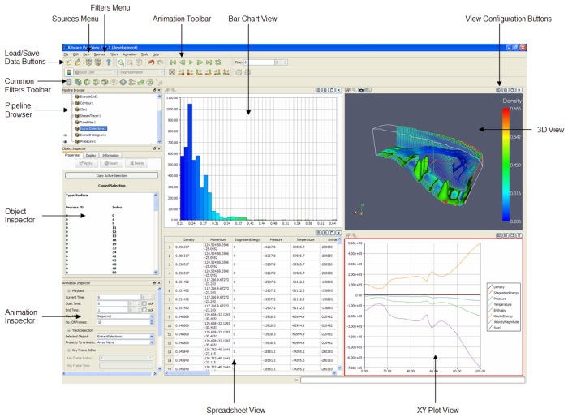

| Interface Element | Description |
| Pipeline Browser | Displays the visualization pipeline in the current ParaView session |
| Object Inspector | Contains controls and information about the reader, source, or filter selected in the Pipeline Browser |
| Views | Rendering windows for displaying visual representations of the data (includes 3D View, XY Plot View, and Bar Chart View) |
| Animation | Controls creating and playing back keyframe animations |
| Element Inspector | Displays underlying data values from a selection |
| Sources menu | Lists available data-producers in ParaView |
| Filters menu and toolbar | Provides visualization algorithms for operating on datasets |
| Load Data Button | Loads data into ParaView in a variety of file formats |
| Save Data Button | Saves data from ParaView into a variety of file formats |